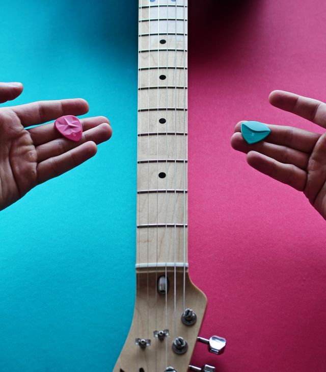

Dato curioso: ¿Cómo elegir tu primera guitarra?
Muchos clientes llegan sin saber si partir con una acústica o eléctrica. Te contamos las claves para decidir según tu estilo musical y presupuesto.
Ver caso
Muchos clientes llegan sin saber si partir con una acústica o eléctrica. Te contamos las claves para decidir según tu estilo musical y presupuesto.
Ver caso
La humedad y la temperatura son los principales enemigos de una guitarra. Aprende a mantener tu instrumento en óptimas condiciones.
Ver caso